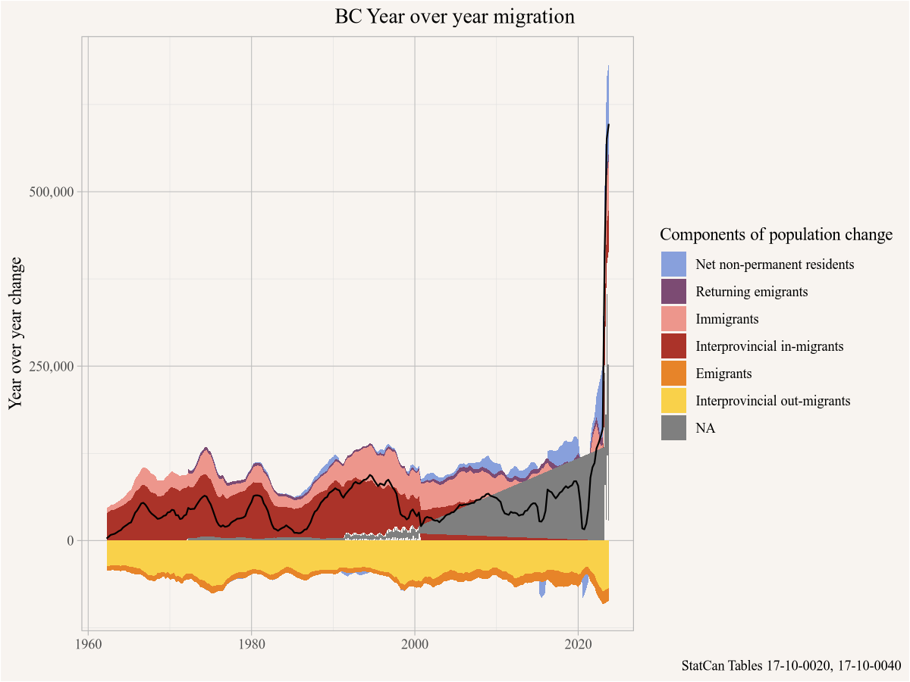

This example is motivated by a BC government press release titled “B.C. welcomes more than 100,000 people – the most in 60 years”. This is the type of attention-grabbing headline where our gut reaction usually is to question if this is true.
Let’s first try and understand what the headline really means. B.C. “welcoming” people refers to people moving to the province from elsewhere, either from other provinces or internationally. So this is referring to gross in-migration. But reading the text of the press release it immediately pivots to a different concept, saying that “B.C.’s net migration reached 100,797 people in 2021”. It helpfully explains that net migration is the difference between people moving here and people moving away. Which is quite different from the number of people B.C. “welcomed” that year, or the number of people “moving to the province in 2021” as implied by the title and the first sentence of the press release.
So here comes the first difficulty, the press release is contradicting itself by mixing two concepts. That leads us to formulate a fairly broad question that should help clear this up.
14.1 Question
How many people has B.C. welcomed, net and gross, how has that changed over the last 6 decades, and how should this be interpreted?
14.2 Data sources
To start, let’s figure out where that data point comes from.
The press release references StatCan as the source, let’s search through the StatCan tables. Google usually works reasonably well, but we can also search programmatically. We are looking for migration estimates from the quarterly demographic estimates to get the most up-to-data population estimates from StatCan. For results we just need the first two columns, that table number and the title.
# A tibble: 2 × 2
cansim_table_number cubeTitleEn
<chr> <chr>
1 17-10-0020 Estimates of the components of interprovincial migration,…
2 17-10-0040 Estimates of the components of international migration, q…
It looks like Table 17-10-0020 and 17-10-0040 are what we are looking for. Let’s load in the data and inspect the first couple of rows for BC.
# A tibble: 6 × 4
GEO Date `Interprovincial migration` val_norm
<chr> <date> <fct> <dbl>
1 British Columbia 2023-04-01 In-migrants 22371
2 British Columbia 2023-04-01 Out-migrants 22671
3 British Columbia 2023-07-01 In-migrants 12552
4 British Columbia 2023-07-01 Out-migrants 17186
5 British Columbia 2023-10-01 In-migrants 7892
6 British Columbia 2023-10-01 Out-migrants 10620
For inter-provincial migration we get in and out migration counts for every quarter. Let’s also inspect the international migration data.
Code
international|>filter(GEO=="British Columbia")|>select(GEO,Date,`Components of population growth`,val_norm)|>tail()
# A tibble: 6 × 4
GEO Date `Components of population growth` val_norm
<chr> <date> <fct> <dbl>
1 British Columbia 2023-10-01 Net emigration 2890
2 British Columbia 2023-10-01 Emigrants 4853
3 British Columbia 2023-10-01 Returning emigrants 1963
4 British Columbia 2023-10-01 Net non-permanent residents 20516
5 British Columbia 2023-10-01 Non-permanent residents, inflows 54008
6 British Columbia 2023-10-01 Non-permanent residents, outflows 33492
Here we get immigrants, emigrants, returning emigrants, but for temporary emigrants and non-permanent residents we only get net change. That puts a bit of a damper on our ambition to look at gross migration, for those last two categories net is all we have.
14.4 Data preparation
Next we got to wrangle this data into a useful format. We are interested in all of these components, so we need to join these two data series together. We will retain the GeoUID, GEO, Components of population growth, Date and val_norm columns, which requires some renaming and then defining factor levels so that they stack nicely later in our plots. We also flip the sign on out-migrants and emigrants, as these are out-flows. To make sure those two time series start at the same time we cut it off appropriately.
The press release talked about annual change, so we do a rolling sum over 4 quarters, right-aligning the data so it’s for the period of the preceding year.
Code
migration_data<-bind_rows(interprovincial|>select(GeoUID,GEO,Date, `Components of population growth`=`Interprovincial migration`,val_norm)|>mutate(`Components of population growth`=paste0("Interprovincial ",tolower(`Components of population growth`))),international|>select(GeoUID,GEO,Date,`Components of population growth`,val_norm))|>mutate(`Components of population growth`=factor(`Components of population growth`, levels=c("Interprovincial out-migrants","Emigrants","Interprovincial in-migrants","Immigrants","Returning emigrants","Net temporary emigrants","Net non-permanent residents")))|>mutate(value=ifelse(`Components of population growth`%in%c("Interprovincial out-migrants","Emigrants"),-val_norm,val_norm))|>filter(Date>=pmax(min(interprovincial$Date),min(international$Date)))|>group_by(GeoUID,`Components of population growth`)|>arrange(Date)|>mutate(annual=zoo::rollsum(value,k=4,na.pad =TRUE,align ="right"))|>filter(!is.na(annual))|>ungroup()
We will also need net migration stats, so let’s compute these by summing of the components,
Code
net_migration<-migration_data|>group_by(Date,GEO,GeoUID)|>summarize(value=sum(value),annual=sum(annual),.groups="drop")|>mutate(`Components of population growth`="Net migration")
14.5 Analysis and visualization
Time to make a graph.
Code
migration_colours<-setNames(MetBrewer::met.brewer("Archambault",7),migration_data$`Components of population growth`%>%levels%>%rev)ggplot(migration_data|>filter(GEO=="British Columbia"))+geom_area(aes(x=Date,y=annual,fill=fct_rev(`Components of population growth`)), stat="identity")+scale_y_continuous(labels=scales::comma)+geom_line(data=net_migration|>filter(GEO=="British Columbia"),aes(x=Date,y=annual))+scale_fill_manual(values=migration_colours)+labs(title="BC Year over year migration", y="Year over year change",x=NULL,fill="Components of population change", caption="StatCan Tables 17-10-0020, 17-10-0040")

This shows us that the press report did not mean to talk about number of people B.C. has “welcomed” or that “moved to the province” but instead the difference between the number of people it welcomed and the number of people it bid farewell.
And the net migration is indeed at record levels. At least in absolute terms. But B.C. now is very different from B.C. in the 60s at the start of this time series. How can we compare net migration over time in a more meaningful way? Normalizing by population is a good option here. Let’s grab the data and take a look how B.C. population has changed.
Code
pop_data<-get_cansim("17-10-0009")|>select(GEO,Date,Population=val_norm)pop_data|>filter(GEO=="British Columbia")|>ggplot(aes(x=Date,y=Population))+geom_line()+scale_y_continuous(labels=scales::comma)+labs(title="Population estimates for British Columbia", y="Number of people", x=NULL, caption="StatCan Table 17-10-0009")
Indeed, the trend is quite strong. Let’s fold that in and normalize by population.
Code
migration_data|>left_join(pop_data, by=c("GEO","Date"))|>filter(GEO=="British Columbia")|>ggplot()+geom_area(aes(x=Date,y=annual/Population,fill=fct_rev(`Components of population growth`)), stat="identity")+scale_y_continuous(labels=scales::percent)+geom_line(data=net_migration|>left_join(pop_data, by=c("GEO","Date"))|>filter(GEO=="British Columbia"),aes(x=Date,y=annual/Population))+scale_fill_manual(values=migration_colours)+labs(title="BC Year over year migration", y="Year over year change per population",x=NULL, fill="Components of population change", caption="StatCan Tables 17-10-0020, 17-10-0040, 17-10-0009")
Here the picture looks a little different. Net migration per capita is at its highest since the 90s, but the past 60 years there were several periods where it was larger.
The press report also mentioned that B.C.’s interprovincial migration numbers are higher than any other province. This is easy to check now. In line with the press release that prompted our question we are pinning the data at the forth quarter of 2021.
migration_data_interprovinicial<-migration_data|>left_join(pop_data, by=c("GEO","Date"))|>filter(grepl("Interprovincial",`Components of population growth`))net_interprovincial<-migration_data_interprovinicial|>group_by(GEO,Date)|>summarize(value=sum(value), annual=sum(annual), Population=first(Population), .groups="drop")migration_data_interprovinicial|>filter(GEO!="Canada")|>filter(Date==pinned_date)|>ggplot(aes(y=GEO,x=annual))+geom_bar(stat="identity",aes(fill=fct_rev(`Components of population growth`)))+geom_boxplot(data=net_interprovincial|>filter(GEO!="Canada")|>filter(Date==max(Date)))+scale_fill_manual(values=migration_colours[grepl("Interprov",names(migration_colours))])+scale_x_continuous(labels=scales::comma)+labs(title="Interprovincial migration Q4 2020 to Q4 2021", fill="Components of population growth", y=NULL,x="Year over year change", caption="StatCan Tables 17-10-0020, 17-10-0040, 17-10-0009")
In absolute number B.C. indeed has both the highest interprovincial in-migration and interprovincial net-migration among all provinces. But the provinces have vastly different sizes, so that’s not really a fair comparison. Again, we can normalize by population.
Code
migration_data_interprovinicial|>filter(GEO!="Canada")|>filter(Date==pinned_date)|>ggplot(aes(y=GEO,x=annual/Population))+geom_bar(stat="identity",aes(fill=fct_rev(`Components of population growth`)))+geom_boxplot(data=net_interprovincial|>filter(GEO!="Canada")|>filter(Date==max(Date)))+scale_fill_manual(values=migration_colours[grepl("Interprov",names(migration_colours))])+scale_x_continuous(labels=scales::percent)+labs(title="Interprovincial migration Q4 2020 to Q4 2021", fill="Components of population growth", y=NULL,x="Year over year change per capita", caption="StatCan Tables 17-10-0020, 17-10-0040, 17-10-0009")
Viewed this way B.C.’s interprovincial in-migration and net migration still looks good, but many of the other provinces beat out that growth rate.
For completeness we can also just show the full graph that includes the international migration components.
Code
migration_data|>left_join(pop_data, by=c("GEO","Date"))|>filter(Date==pinned_date)|>ggplot(aes(y=GEO,x=annual/Population))+geom_bar(stat="identity",aes(fill=fct_rev(`Components of population growth`)))+geom_boxplot(data=net_migration|>left_join(pop_data, by=c("GEO","Date"))|>filter(Date==max(Date)))+scale_fill_manual(values=migration_colours)+scale_x_continuous(labels=scales::percent)+labs(title="Migration Q4 2020 to Q4 2021", fill="Components of population growth", y=NULL,x="Year over year change per capita", caption="StatCan Tables 17-10-0020, 17-10-0040, 17-10-0009")
14.6 Interpretation
This answers our question, the Q4 2021 year over year net migration edges over the 100,000 people mark, and in absolute terms this is the highest it’s been over at least 60 years. (And it climbed even higher in the following quarters.) And B.C.’s interprovincial (gross) in-migration was the highest in Canada in absolute terms. But what can we learn from that?
B.C. 60 years ago is very different from B.C. today. To account for that we can normalize by population, and the relative net migration has been higher at several times during the past 60 years, most recently in the 90s.
Viewed relative to population size we note that other provinces, in particular some of the Atlantic Provinces, vastly outperform BC’s interprovincial net as well as gross in-migration in that timeframe, mostly fuelled by the 50k people that left Ontario during that time period.
We also note the big dip in net-migration during COVID-19. It is not clear if the current heights are a bounce-back to make up for the comparatively low net in-migration during the pandemic, or if it is simply reverting back to the increasing trend we have seen over the past 10 years.
Source Code
## BC migrationThis example is motivated by a [BC government press release](https://news.gov.bc.ca/releases/2022PREM0019-000505) titled "**B.C. welcomes more than 100,000 people -- the most in 60 years**". This is the type of attention-grabbing headline where our gut reaction usually is to question if this is true.Let's first try and understand what the headline really means. B.C. "welcoming" people refers to people moving to the province from elsewhere, either from other provinces or internationally. So this is referring to gross in-migration. But reading the text of the press release it immediately pivots to a different concept, saying that "B.C.'s net migration reached 100,797 people in 2021". It helpfully explains that net migration is the difference between people moving here and people moving away. Which is quite different from the number of people B.C. "welcomed" that year, or the number of people "moving to the province in 2021" as implied by the title and the first sentence of the press release.So here comes the first difficulty, the press release is contradicting itself by mixing two concepts. That leads us to formulate a fairly broad question that should help clear this up.## Question**How many people has B.C. welcomed, net and gross, how has that changed over the last 6 decades, and how should this be interpreted?**## Data sourcesTo start, let's figure out where that data point comes from.The press release references StatCan as the source, let's search through the StatCan tables. Google usually works reasonably well, but we can also search programmatically. We are looking for migration estimates from the quarterly demographic estimates to get the most up-to-data population estimates from StatCan. For results we just need the first two columns, that table number and the title.```{r message=FALSE}library(tidyverse)library(cansim)search_cansim_cubes("migration") |> filter(grepl("quarterly",cubeTitleEn)) |> arrange(desc(cubeEndDate)) |> select(1:2)```It looks like Table 17-10-0020 and 17-10-0040 are what we are looking for. Let's load in the data and inspect the first couple of rows for BC.## Data acquisition```{r message=FALSE}interprovincial <- get_cansim("17-10-0020")international <- get_cansim("17-10-0040")interprovincial |> filter(GEO=="British Columbia") |> select(GEO,Date,`Interprovincial migration`,val_norm) |> tail()```For inter-provincial migration we get in and out migration counts for every quarter. Let's also inspect the international migration data.```{r}international |>filter(GEO=="British Columbia") |>select(GEO,Date,`Components of population growth`,val_norm) |>tail()```Here we get immigrants, emigrants, returning emigrants, but for temporary emigrants and non-permanent residents we only get net change. That puts a bit of a damper on our ambition to look at gross migration, for those last two categories net is all we have.## Data preparationNext we got to wrangle this data into a useful format. We are interested in all of these components, so we need to join these two data series together. We will retain the `GeoUID`, `GEO`, `Components of population growth`, `Date` and `val_norm` columns, which requires some renaming and then defining factor levels so that they stack nicely later in our plots. We also flip the sign on out-migrants and emigrants, as these are out-flows. To make sure those two time series start at the same time we cut it off appropriately.The press release talked about annual change, so we do a rolling sum over 4 quarters, right-aligning the data so it's for the period of the preceding year.```{r}migration_data <-bind_rows( interprovincial |>select(GeoUID,GEO,Date,`Components of population growth`=`Interprovincial migration`,val_norm) |>mutate(`Components of population growth`=paste0("Interprovincial ",tolower(`Components of population growth`))), international |>select(GeoUID,GEO,Date,`Components of population growth`,val_norm)) |>mutate(`Components of population growth`=factor(`Components of population growth`,levels=c("Interprovincial out-migrants","Emigrants","Interprovincial in-migrants","Immigrants","Returning emigrants","Net temporary emigrants","Net non-permanent residents"))) |>mutate(value=ifelse(`Components of population growth`%in%c("Interprovincial out-migrants","Emigrants"),-val_norm,val_norm)) |>filter(Date>=pmax(min(interprovincial$Date),min(international$Date))) |>group_by(GeoUID,`Components of population growth`) |>arrange(Date) |>mutate(annual=zoo::rollsum(value,k=4,na.pad =TRUE,align ="right")) |>filter(!is.na(annual)) |>ungroup()```We will also need net migration stats, so let's compute these by summing of the components,```{r}net_migration <- migration_data |>group_by(Date,GEO,GeoUID) |>summarize(value=sum(value),annual=sum(annual),.groups="drop") |>mutate(`Components of population growth`="Net migration")```## Analysis and visualizationTime to make a graph.```{r}migration_colours <-setNames(MetBrewer::met.brewer("Archambault",7), migration_data$`Components of population growth`%>% levels %>% rev)ggplot(migration_data |>filter(GEO=="British Columbia")) +geom_area(aes(x=Date,y=annual,fill=fct_rev(`Components of population growth`)),stat="identity") +scale_y_continuous(labels=scales::comma) +geom_line(data=net_migration |>filter(GEO=="British Columbia"),aes(x=Date,y=annual)) +scale_fill_manual(values=migration_colours) +labs(title="BC Year over year migration",y="Year over year change",x=NULL,fill="Components of population change",caption="StatCan Tables 17-10-0020, 17-10-0040")```This shows us that the press report did not mean to talk about number of people B.C. has "welcomed" or that "moved to the province" but instead the difference between the number of people it welcomed and the number of people it bid farewell.And the net migration is indeed at record levels. At least in absolute terms. But B.C. now is very different from B.C. in the 60s at the start of this time series. How can we compare net migration over time in a more meaningful way? Normalizing by population is a good option here. Let's grab the data and take a look how B.C. population has changed.```{r message=FALSE}pop_data <- get_cansim("17-10-0009") |> select(GEO,Date,Population=val_norm)pop_data |> filter(GEO=="British Columbia") |> ggplot(aes(x=Date,y=Population)) + geom_line() + scale_y_continuous(labels=scales::comma) + labs(title="Population estimates for British Columbia", y="Number of people", x=NULL, caption="StatCan Table 17-10-0009")```Indeed, the trend is quite strong. Let's fold that in and normalize by population.```{r}migration_data |>left_join(pop_data, by=c("GEO","Date")) |>filter(GEO=="British Columbia") |>ggplot() +geom_area(aes(x=Date,y=annual/Population,fill=fct_rev(`Components of population growth`)),stat="identity") +scale_y_continuous(labels=scales::percent) +geom_line(data=net_migration |>left_join(pop_data, by=c("GEO","Date")) |>filter(GEO=="British Columbia"),aes(x=Date,y=annual/Population)) +scale_fill_manual(values=migration_colours) +labs(title="BC Year over year migration",y="Year over year change per population",x=NULL,fill="Components of population change",caption="StatCan Tables 17-10-0020, 17-10-0040, 17-10-0009")```Here the picture looks a little different. Net migration per capita is at its highest since the 90s, but the past 60 years there were several periods where it was larger.The press report also mentioned that B.C.'s interprovincial migration numbers are higher than any other province. This is easy to check now. In line with the press release that prompted our question we are pinning the data at the forth quarter of 2021.```{r}pinned_date <-as.Date("2021-10-01")``````{r}migration_data_interprovinicial <- migration_data |>left_join(pop_data, by=c("GEO","Date")) |>filter(grepl("Interprovincial",`Components of population growth`))net_interprovincial <- migration_data_interprovinicial |>group_by(GEO,Date) |>summarize(value=sum(value),annual=sum(annual),Population=first(Population),.groups="drop")migration_data_interprovinicial |>filter(GEO!="Canada") |>filter(Date==pinned_date) |>ggplot(aes(y=GEO,x=annual)) +geom_bar(stat="identity",aes(fill=fct_rev(`Components of population growth`))) +geom_boxplot(data=net_interprovincial |>filter(GEO!="Canada") |>filter(Date==max(Date))) +scale_fill_manual(values=migration_colours[grepl("Interprov",names(migration_colours))]) +scale_x_continuous(labels=scales::comma) +labs(title="Interprovincial migration Q4 2020 to Q4 2021",fill="Components of population growth",y=NULL,x="Year over year change",caption="StatCan Tables 17-10-0020, 17-10-0040, 17-10-0009")```In absolute number B.C. indeed has both the highest interprovincial in-migration and interprovincial net-migration among all provinces. But the provinces have vastly different sizes, so that's not really a fair comparison. Again, we can normalize by population.```{r}migration_data_interprovinicial |>filter(GEO!="Canada") |>filter(Date==pinned_date) |>ggplot(aes(y=GEO,x=annual/Population)) +geom_bar(stat="identity",aes(fill=fct_rev(`Components of population growth`))) +geom_boxplot(data=net_interprovincial |>filter(GEO!="Canada") |>filter(Date==max(Date))) +scale_fill_manual(values=migration_colours[grepl("Interprov",names(migration_colours))]) +scale_x_continuous(labels=scales::percent) +labs(title="Interprovincial migration Q4 2020 to Q4 2021",fill="Components of population growth",y=NULL,x="Year over year change per capita",caption="StatCan Tables 17-10-0020, 17-10-0040, 17-10-0009")```Viewed this way B.C.'s interprovincial in-migration and net migration still looks good, but many of the other provinces beat out that growth rate.For completeness we can also just show the full graph that includes the international migration components.```{r}migration_data |>left_join(pop_data, by=c("GEO","Date")) |>filter(Date==pinned_date) |>ggplot(aes(y=GEO,x=annual/Population)) +geom_bar(stat="identity",aes(fill=fct_rev(`Components of population growth`))) +geom_boxplot(data=net_migration |>left_join(pop_data, by=c("GEO","Date")) |>filter(Date==max(Date))) +scale_fill_manual(values=migration_colours) +scale_x_continuous(labels=scales::percent) +labs(title="Migration Q4 2020 to Q4 2021",fill="Components of population growth",y=NULL,x="Year over year change per capita",caption="StatCan Tables 17-10-0020, 17-10-0040, 17-10-0009")```## InterpretationThis answers our question, the Q4 2021 year over year net migration edges over the 100,000 people mark, and in absolute terms this is the highest it's been over at least 60 years. (And it climbed even higher in the following quarters.) And B.C.'s interprovincial (gross) in-migration was the highest in Canada in absolute terms. But what can we learn from that?B.C. 60 years ago is very different from B.C. today. To account for that we can normalize by population, and the relative net migration has been higher at several times during the past 60 years, most recently in the 90s.Viewed relative to population size we note that other provinces, in particular some of the Atlantic Provinces, vastly outperform BC's interprovincial net as well as gross in-migration in that timeframe, mostly fuelled by the 50k people that left Ontario during that time period.We also note the big dip in net-migration during COVID-19. It is not clear if the current heights are a bounce-back to make up for the comparatively low net in-migration during the pandemic, or if it is simply reverting back to the increasing trend we have seen over the past 10 years.